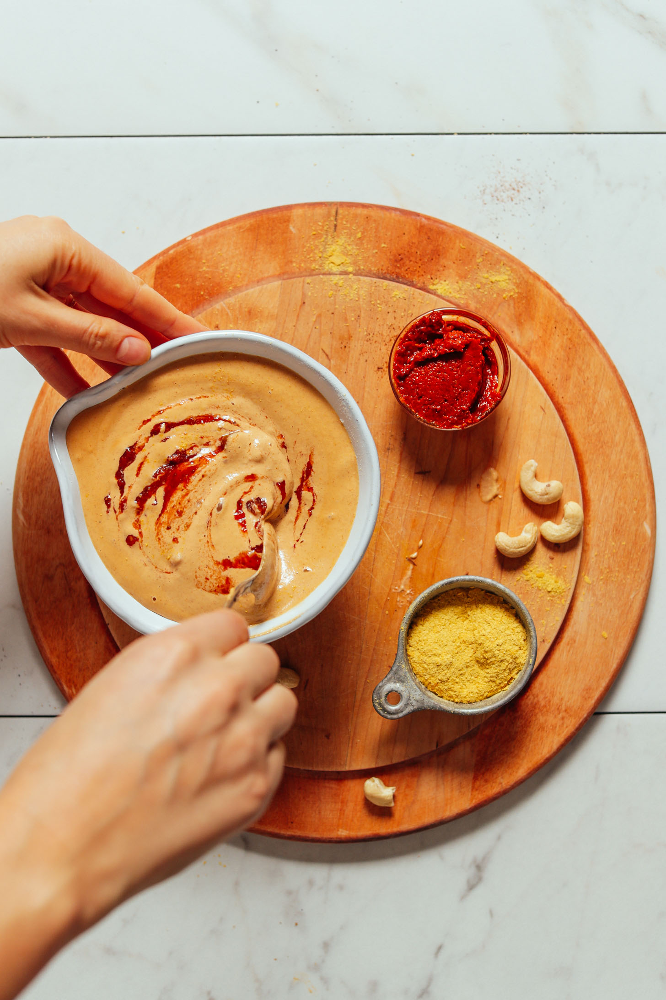

Sam's Odin Recipes
Five-Minute-Queso

This is an incredible simple and delicious vegan queso that can be used in a variety of recipes.
Brought to you by the sublime versatility of cashews.
Credit to Minimalist Baker. Original recipe can be found here.
Info
- Prep Time: 5 minutes
- Total Time: 5 minutes
- Servings: 6 (1/4 cup)
- Course: Dip, Side
- Cuisine: Gluten-free, Mexican Inspired, Vegan
- Freezer Friendly: Yes
- Does it keep? 1 week in fridge
Ingredients
- 3/4 – 1 cup hot water
- 1 cup raw cashews
- 1 clove garlic, chopped (healthy scoop from Costco Garlic)
- 2 Tbsp nutritional yeast
- 1/2 tsp ground cumin
- 1 tsp chili powder
- 1/2 tsp salt, plus more to taste
- 1 Tbsp Tapatio (originally recipe called for harissa)
Instructions
- Add all ingredients to a blender (starting with the lesser amount of water) and blend until creamy, adding more water as needed to blend until creamy and smooth. We recommend a small blender (we prefer the NutriBullet), or a high-speed blender. Add just enough water to achieve a creamy, pourable queso. If it gets too thin, thicken with additional raw cashews.
Back to Top
Back to Home
Made by Sam @2022.